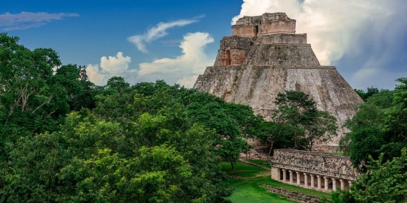

Se conoce como la cultura maya o civilización maya al conjunto de los pueblos precolombinos que gobernaron Mesoamérica durante 18 siglos, desde la Época Preclásica (2000 a.C. – 250 d. C.) del continente, hasta la Época Posclásica (900-1527 d. C.), cuando se produjo la Conquista de América.
Fue una de las civilizaciones más destacadas en la América originaria toda. Dejaron tras de sí un conjunto importante de ruinas y un legado cultural que inspiró a las culturas posteriores, parte del cual aún sobrevive.
Los mayas son celebrados por distintos aspectos de su avanzada cultura. Por ejemplo, inventaron el único sistema completo de escritura de América precolombina, y desarrollaron un conocimiento propio en materia artística, arquitectónica, matemática, astronómica y ecológica. Entre otras cosas, se les atribuye la invención del cero.
